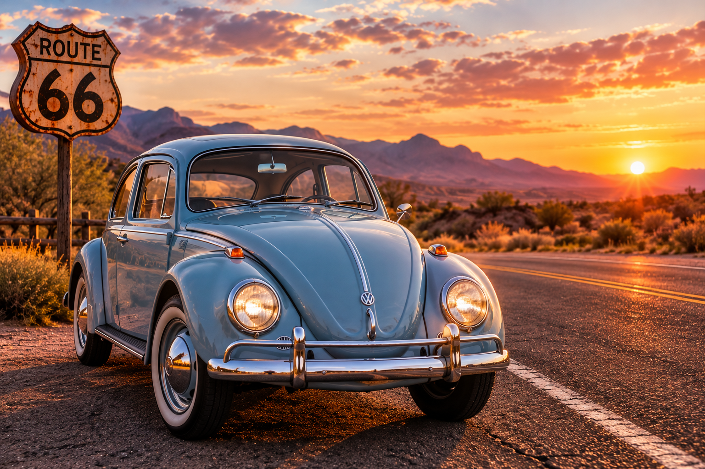
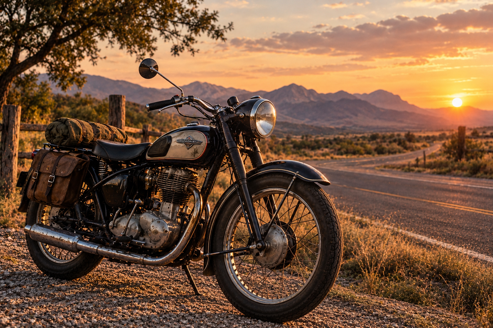
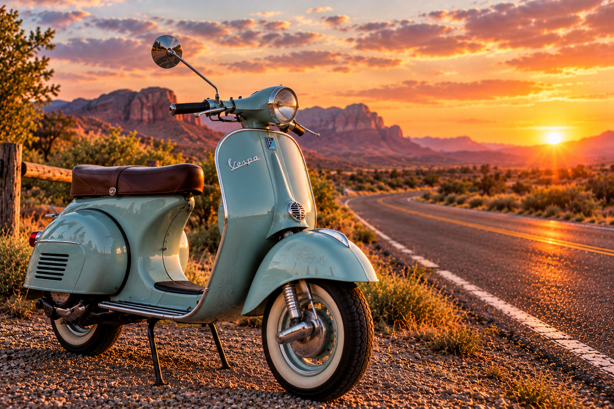

Historia de los vehículos clásicos
Los vehículos antiguos representan una parte importante de la historia del transporte. Sus diseños, motores y aventuras nos cuentan cómo han cambiado los viajes a través del tiempo.
Automóviles clásicos
Durante las décadas de 1950 y 1960, muchos automóviles se destacaron por sus carrocerías llamativas, abundantes cromados y diseños únicos. Hoy son recordados por su estilo y por representar una época importante de la industria automotriz.
Volkswagen Escarabajo

El Volkswagen Escarabajo nació de un proyecto desarrollado en Alemania antes de la Segunda Guerra Mundial y su producción civil se expandió después de 1945. Su forma redondeada, su mecánica sencilla y su popularidad lo convirtieron en uno de los automóviles más reconocidos del mundo.
Motocicletas de viaje

Las motocicletas se convirtieron en compañeras de quienes disfrutan recorrer largas carreteras. Los modelos clásicos evocan libertad, exploración y aventura; sus alforjas y su diseño robusto recuerdan los viajes por caminos abiertos.
Las Vespas

La Vespa fue presentada por la empresa italiana Piaggio en 1946. Diseñada como un medio de transporte práctico y accesible para la posguerra, se hizo famosa por su forma elegante y compacta y se convirtió en un símbolo del diseño italiano.